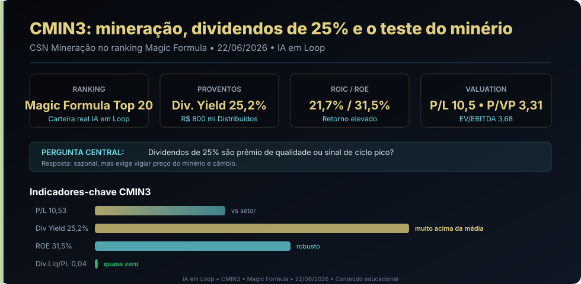

22/06: CMIN3, mineração e o teste dos dividendos no topo do ciclo
Depois de telecomunicações, a leitura avança para mineração: a Magic Formula coloca CSN Mineração no Top 20 com dividendos de 25%, ROE de 31,5% e dívida quase zero — mas o investidor precisa perguntar se esses números sobrevivem a um turno desfavorável do minério de ferro e do câmbio.

Mineração parece simples: tirar minério, vender para a China, distribuir lucro. Na prática, a criação de valor depende do preço global do minério, da taxa de câmbio, do custo de extração e da disciplina de alavancagem quando o ciclo vira.
Resposta curta: dividendos reais, mas dependentes de ciclo e câmbio
CMIN3 é um caso clássico de cíclico de commodities com dividendos elevados. Os 25,2% de dividend yield não são ilusão: a CSN Mineração distribuiu quase R$ 800 milhões e mantém programa de recompra de ações. O lucro líquido de R$ 2,23 bilhões nos últimos 12 meses, ROIC de 21,7% e ROE de 31,5% confirmam que a operação gera caixa real. A armadilha clássica de mineração é que esses números crescem no topo do ciclo e encolchem na descida — e a queda de 17% no preço da ação em 2026 sugere que o mercado já está precificando essa possibilidade.
O que é um cíclico de commodities? É uma empresa cujo resultado oscila com o preço internacional do que ela produz — neste caso, minério de ferro. Quando o preço do minério sobe, lucro e dividendos explodem; quando cai, lucro encolhe rápido porque os custos fixos de mina e logística não diminuem na mesma proporção. O termo "ciclo" refere-se a essa alternância entre fases favoráveis e desfavoráveis, que pode durar anos.
Por que CMIN3 hoje?
No ranking Magic Formula de junho do IA em Loop, CMIN3 está entre o Top 20, no setor de Mineração / Minerais Metálicos. O resultado do 1T26, divulgado em maio, mostrou volumes resilientes e avanço na produção própria, mas lucro afetado pelo câmbio desfavorável. O Fundamentus consultado em 19/06/2026 mostrava cotação de R$ 4,32, P/L de 10,53, P/VP de 3,31, ROIC de 21,7%, ROE de 31,5%, margem bruta de 45,9%, margem EBIT de 28,8% e margem líquida de 12,5%. A dívida líquida/patrimônio de 0,04 é quase zero, com disponibilidades de R$ 8,86 bilhões contra dívida líquida de apenas R$ 268 milhões. O EV/EBITDA de 3,68 reforça o apelo de valuation.
Na carteira real Magic Formula do IA em Loop, CMIN3 está presente com 20 unidades a preço médio de R$ 5,05 — posição que投入 no início e ainda aguarda o segundo mês de evolução.
O resultado do 1T26 resolve a tese?
Resolve uma parte, não a tese inteira. O 1T26 confirmou volumes resilientes e avanço na produção própria — CSN Mineração está produzindo mais minério próprio, o que reduz dependência de terceiros e melhora margem por tonelada. O problema é que o lucro foi corroído pelo câmbio: como exportadora, CMIN3 fatura em dólar e converte para real. Quando o dólar cai frente ao real, a receita em real diminui mesmo que o volume e o preço do minério em dólar estejam estáveis.
A leitura da IA em Loop é: CMIN3 está num momento de geração de caixa forte e balanço limpo, mas a tese depende de dois motores externos — preço do minério de ferro e taxa de câmbio — que a empresa não controla. A Magic Formula encontra qualidade em ROIC e barateza em EV/EBITDA; o investidor precisa decidir se aceita a volatilidade cíclica em troca desses indicadores.
| Sinal | Leitura prática | O que monitorar |
|---|---|---|
| Top 20 Magic Formula | ROIC e EY colocam CMIN3 no radar quantitativo | Sustentabilidade do ROIC se minério cair 20%+ |
| Div. Yield 25,2% | Indica geração de caixa e política agressiva de retorno | Capacidade de manter dividendos em ciclo desfavorável |
| Dívida quase zero | Balanço blindado; sem risco financeiro imediato | Se minério cai, a alavancagem pode subir rápido se CAPEX continuar |
| Lucro afetado pelo câmbio | 1T26 mostra que câmbio desfavorável corrói margem | Cenário macro de dólar e PIB chinês |
| Produção própria avançando | Reduz custo e dependência de terceiros | Prazo e custo de expansão da mina Casa de Pedra |
Ciclo: pico ou plataforma?
A pergunta que nenhum ranking responde sozinho: o preço do minério de ferro está perto de um topo ou há sustentação estrutural? Os sinais públicos de junho misturam otimismo cauteloso com alertas:
- A favor: produção própria cresce, CAPEX de expansão já realizado, balanço limpo, EV/EBITDA de 3,68 sugere desconto, programa de recompra sinaliza confiança da gestão.
- Contra: demanda chinesa em desaceleração estrutural, risco de excesso de oferta global de minério, câmbio desfavorável corroindo resultado em 1T26, queda de 17% no preço da ação em 2026 já reflete cautela.
O termo turnaround — uma reversão de tendência após período negativo — não se aplica aqui diretamente. CMIN3 é mais um caso de cíclico perto do pico de geração de caixa. O risco não é de turnaround que não acontece, mas de ciclo que vira e reduz lucro e dividendos mais rápido do que o mercado antecipa.
O lado bom
Top 20 Magic Formula, dividendos de 25%, ROE de 31,5%, dívida quase zero, EV/EBITDA de 3,68, produção própria avançando e programa de recompra ativo. O balanço está entre os mais blindados do setor.
O lado perigoso
Cíclica: lucro e dividendos dependem de preço de minério e câmbio. Demanda chinesa em desaceleração, risco de excesso de oferta global, e a queda de 17% em 2026 pode ser só o começo se o ciclo virar. Recompra de ações no pico pode destruir valor se minério cair.
Compra, venda ou espera?
Para carteira nova: CMIN3 parece adequada para estudo disciplinado ou posição pequena e diversificada. Os indicadores são excepcionais para o momento, mas o investidor precisa aceitar que mineração é volátil por natureza e os dividendos de 25% não são garantidos para sempre.
Para quem já tem: o ponto não é vender só porque é cíclica, nem comprar mais só porque os dividendos estão altos. A tese melhora se o minério se mantiver acima de US$ 100/tonelada, se o câmbio estabilizar ou voltar a favor, se a produção própria continuar crescendo e se a recompra de ações for suspensa antes de um topo de ciclo. Piora se o minério cair consistentemente, se o real se apreciar demais ou se a China acelerar desaceleração.
Gatilhos para melhorar a leitura: minério de ferro estável ou subindo, câmbio virando a favor, produção própria atingindo metas de Casa de Pedra, manutenção do dividend yield acima de 15% em resultados anuais. Gatilhos para piorar: minério caindo abaixo de US$ 90/tonelada, câmbio desfavorável persistente, aumento de CAPEX sem contrapartida de receita, ou corte expressivo de dividendos.
Leitura IA em Loop
CMIN3 mostra por que a Magic Formula deve ser usada como porta de entrada, não como piloto automático. O ranking encontra uma empresa com ROIC excepcional, valuation barato e dividendos extraordinários; a análise precisa decidir se esses números sobrevivem a um turno do minério e do câmbio. A resposta de hoje é condicional: os indicadores são reais e o balanço é forte, mas mineração é o setor onde o passado recente é o pior preditor do futuro. Aceitar CMIN3 é aceitar que parte dos dividendos é presente do ciclo, não garantia perpétua.